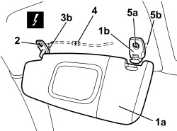
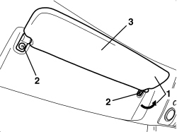

7065C34 SUN BLIND (ONE), LEFT OR RIGHT - R.R.
- Path
- Procedures > 70 FITTINGS > 7065 SEAT BELTS AND ACCESSORIES > 7065C ACCESSORIES AND DECORATIONS > 7065C34 SUN BLIND (ONE), LEFT OR RIGHT - R.R.
- Kind
- repair procedure (removal / refitting; the operation number is the code)
- Applies to
- all engines; all production periods
- Interactive page
- https://sloeber94.github.io/elrnDB-aBrrSpdr/en/#/946002697
Applies to: all engines; all production periods
 Removing
Removing
 Refitting
Refitting- Lower the sun visor
1. Disconnect the sun visor (1a) from the grab handle (1b).
2. Undo the bolt.
3. Move the sun visor (1a) slightly releasing the retainer (3b).
4. Disconnect the electrical connection and keep the sun visor.
Description | Component |
|---|---|
DRIVER'S SUN VISOR LIGHT | |
PASSENGER SIDE SUN VISOR LIGHT |
5. If necessary, undo the bolt (5a) and remove the grab handle (1b) releasing the locating dowel (5b).

Applies to: all engines; all production periods
Refitting
Removing- Check that the sun visor is not damaged.
- If removed, place the grab handle in position, attach the locating dowel and tighten the bolt.
- Connect the electrical connection.
- Place the sun visor in position and attach the retainer.
- Tighten the bolt.
- Attach the sun visor to the grab handle.
Applies to: engines: 2.2 JTS, 3.2 JTS; all production periods; only with equipment: Spider
Removing
Refitting1. Turn the sun visor backwards.
2. Undo the bolts.
3. Remove the sun visor.

Applies to: engines: 2.2 JTS, 3.2 JTS; all production periods; only with equipment: Spider
Refitting
Removing- Check that the sun visor is not damaged.
- Position the sun visor.
- Tighten the bolts.
- Turn the sun visor forwards.
Topics linked from this page (2)
Topics that link to this page (21)
- 5570T61 MULTI-FUNCTION AERIAL - R.R.
- 5580C50 WINDOW BAG MODULE (ONE) LH OR RH - R.R
- 7030H35 HOOD FRONT SEAL - R.R.
- 7030H46 STRIKER (ONE), LEFT OR RIGHT FOR HANDLE ATTACHING HOOD TO WINDSCREEN STRUCTURE - R.R.
- 7030H49 MOULDING FOR HOOD FRONT SUPPORT - R.R.
- 7030H51 HOOD FRONT LOCK CLOSING SENSORS - R.R.
- 7030L10 TRANSPARENT ROOF PANEL - R.R.
- 7030L11 TRANSPARENT ROOF PANEL - R.R. FOR VERSIONS WITH SUN BLIND
- 7030L12 TRANSPARENT ROOF PANEL COVER - R.R.
- 7030L20 SUN BLIND ASSEMBLY - R.R.
- 7030L21 SUN BLIND ASSEMBLY - ALIGNMENT
- 7030L22 SLIDING SUN BLIND - R.R.
- 7030L23 SUN BLIND CROSSMEMBER - R.R.
- 7030L24 SLIDING BLIND MOVEMENT MOTOR - R.R.
- 7030L25 SLIDING BLIND DRIVE CABLES - R.R.
- 7030L26 SLIDING BLIND RETAINING CLIP (ONE), LEFT OR RIGHT - R.R.
- 7035A18 WINDSCREEN GLASS - R.R INCLUDING CLEANING HOUSING
- 7040H10 ROOF PANEL LINING - R.R.
- 7040H24 WINDSCREEN UPPER TRIM - R.R.
- E2520 GLOVE COMPARTMENT LIGHT - BOOT LIGHT - SUN VISOR LIGHT - WIRING DIAGRAM
- E2520 GLOVE COMPARTMENT LIGHT - BOOT LIGHT - SUN VISOR LIGHT - COMPONENT LOCATION